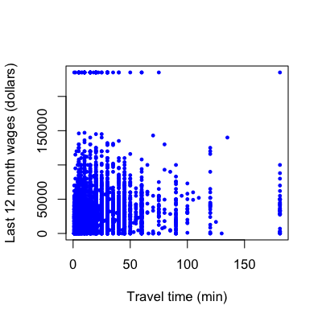
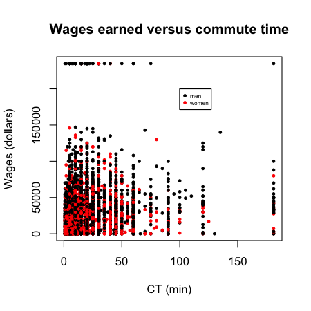
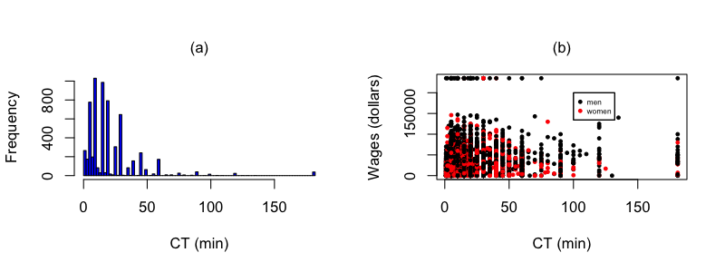
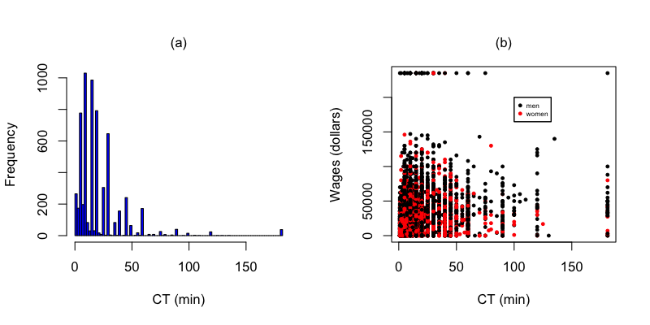

- To understand data properties
- To find patterns in data
- To suggest modeling strategies
- To "debug" analyses
- To communicate results
Expository graphs
Roger D. Peng, Assistant Professor of Biostatistics
Johns Hopkins Bloomberg School of Public Health
Why do we use graphs in data analysis?
Expository graphs
- To understand data properties
- To find patterns in data
- To suggest modeling strategies
- To "debug" analyses
To communicate results
Characteristics of expository graphs
- The goal is to communicate information
- Information density is generally good
- Color/size are used both for aesthetics and communication
- Expository figures have understandable axes, titles, and legends
Housing data

pData <- read.csv("./data/ss06pid.csv")
Axes
Important parameters: xlab,ylab,cex.lab,cex.axis
plot(pData$JWMNP,pData$WAGP,pch=19,col="blue",cex=0.5,
xlab="Travel time (min)",ylab="Last 12 month wages (dollars)")

Axes
plot(pData$JWMNP,pData$WAGP,pch=19,col="blue",cex=0.5,
xlab="Travel time (min)",ylab="Last 12 month wages (dollars)",cex.lab=2,cex.axis=1.5)
Legends
- Important paramters: x,y,legend, other plotting parameters
plot(pData$JWMNP,pData$WAGP,pch=19,col="blue",cex=0.5,xlab="TT (min)",ylab="Wages (dollars)")
legend(100,200000,legend="All surveyed",col="blue",pch=19,cex=0.5)
Legends
plot(pData$JWMNP,pData$WAGP,pch=19,cex=0.5,xlab="TT (min)",ylab="Wages (dollars)",col=pData$SEX)
legend(100,200000,legend=c("men","women"),col=c("black","red"),pch=c(19,19),cex=c(0.5,0.5))
Titles
plot(pData$JWMNP,pData$WAGP,pch=19,cex=0.5,xlab="CT (min)",
ylab="Wages (dollars)",col=pData$SEX,main="Wages earned versus commute time")
legend(100,200000,legend=c("men","women"),col=c("black","red"),pch=c(19,19),cex=c(0.5,0.5))

Multiple panels
par(mfrow=c(1,2))
hist(pData$JWMNP,xlab="CT (min)",col="blue",breaks=100,main="")
plot(pData$JWMNP,pData$WAGP,pch=19,cex=0.5,xlab="CT (min)",ylab="Wages (dollars)",col=pData$SEX)
legend(100,200000,legend=c("men","women"),col=c("black","red"),pch=c(19,19),cex=c(0.5,0.5))
Adding text
par(mfrow=c(1,2))
hist(pData$JWMNP,xlab="CT (min)",col="blue",breaks=100,main="")
mtext(text="(a)",side=3,line=1)
plot(pData$JWMNP,pData$WAGP,pch=19,cex=0.5,xlab="CT (min)",ylab="Wages (dollars)",col=pData$SEX)
legend(100,200000,legend=c("men","women"),col=c("black","red"),pch=c(19,19),cex=c(0.5,0.5))
mtext(text="(b)",side=3,line=1)

Figure captions

Figure 1. Distribution of commute time and relationship to wage earned by sex (a) Commute times in the American Community Survey (ACS) are right skewed. (b) Commute times do not appear to be strongly correlated with wage for either sex.
Colorblindness

Graphical workflow
- Start with a rough plot
- Tweak it to make it expository
Save the file - Include it in presentations
Saving files in R is done with graphics devices. Use the command ?Devices to see a list. Here we will go over the most popular devices.
Something to avoid

Something to aspire to

http://www.facebook.com/notes/facebook-engineering/visualizing-friendships/469716398919